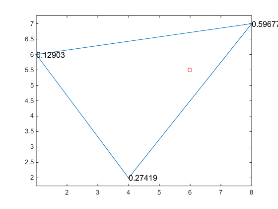
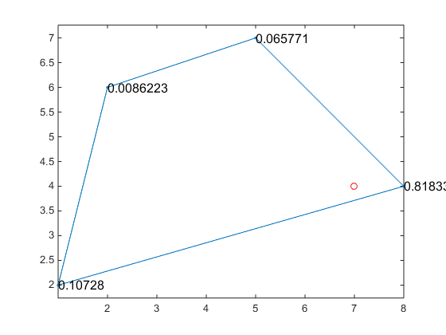

BaryCoord2D
| main | Tutorials | Functions | website |
Calculates the barycentric coordinates of a trianlge or quadrilateral. The function will return nan if the point is outside the element
Version : 1.0
Author : George Kourakos
email: gkourakos@ucdavis.edu
web : https://gwt.ucdavis.edu/research-tools-and-applications/msim
Date : 30-Aug-2019
Department of Land Air and Water
University of California Davis
Contents
Usage
BC = BaryCoord2D( pnt, ND );
Input:
pnt : [1 x 2] The coordinates of the point to calculate the barycentric coordinates
ND : [3 or 4 x2] the coordinates of the triangle or the quadrilateral element
Output
BC : [3 or 4 x 1] The barycentric coordinates
Example with triangle element
Create an element and a point inside the element
p = [1 6; 4 2; 8 7]; point = [6 5.5];
Calculate the unit barycentric coordinates of the point
point_u = BaryCoord2D( point, p );
Plot the triangle and the barycentric coordinates on each trinagle node
plot(p([1:3 1],1), p([1:3 1],2),'.-') hold on plot(point(1), point(2), 'or') for ii = 1:size(p,1) text(p(ii,1), p(ii,2), num2str(point_u(ii)), 'fontsize',12); end axis equal
Example with quadrilateral element
Create an element and a point inside the element
q = [1 2; 8 4; 5 7; 2 6]; point = [7 4];
Calculate the unit barycentric coordinates of the point
point_u = BaryCoord2D( point, q );
Plot the quadrilateral and the barycentric coordinates on each node
clf plot(q([1:4 1],1), q([1:4 1],2),'.-') hold on plot(point(1), point(2), 'or') for ii = 1:size(q,1) text(q(ii,1), q(ii,2), num2str(point_u(ii)), 'fontsize',12); end axis equal